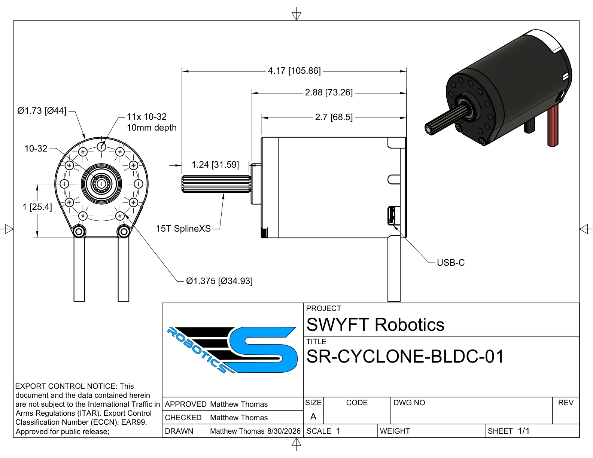

Specifications

Mechanical
Physical envelope, output shaft, and mounting pattern.
| Parameter | Value |
|---|---|
| Body diameter | 1.73 in (44 mm) |
| Body length | 2.7 in (68.5 mm) |
| Overall length, with shaft | 4.17 in (105.86 mm) |
| Shaft stickout | 1.24 in (31.59 mm) |
| Mounting face to USB-C | 2.88 in (73.26 mm) |
| Output shaft | 15T SplineXS |
| Mounting holes | Eleven 10-32, 10 mm deep, on a Ø1.375 in (34.93 mm) bolt circle |
Electrical
Bus voltage and the currents the motor draws and limits.
| Parameter | Value |
|---|---|
| Nominal bus | 12 V (FRC) |
| Operating voltage | 6–24 V. The motor will not arm below 6 V and cuts output above 24 V. |
| Continuous current | 40–60 A |
| Stator current limit | Configurable, default 120 A, up to 160 A |
| Supply current limit | Configurable, default 40 A, up to 60 A |
The Cyclone limits two distinct currents. Stator current flows in the windings and sets torque; supply current is what the battery delivers. Duty cycle links them: supply current is approximately stator × duty, so a large winding current draws only a small battery current at low duty. Near stall at about 10 % duty, roughly 70 A in the windings corresponds to about 7 A from the pack. Set the stator limit to protect the motor and the supply limit to protect the battery and breaker.
Performance
Speed and torque at the ends of the operating range.
| Parameter | Value |
|---|---|
| Free speed | 7530 RPM |
| Stall torque | 3.8 N·m |
| Stall current | 275 A |
Speed and torque trade off across the load range. Free speed (7530 RPM) is the no-load maximum and scales with bus voltage; torque rises with stator current, reaching 3.8 N·m at the 275 A stall point. A heavier load lowers speed and raises current draw. Stall current is a peak, not a continuous rating; the thermal limits bound sustained operation below it.
Control and sensing
The control modes, and the encoder behind them.
| Parameter | Value |
|---|---|
| Control modes | Duty, velocity, position, current |
| Encoder | 14-bit absolute magnetic, 16,384 counts per turn |
| Commutation | Trapezoidal |
Command the Cyclone in one of four modes. Duty sets output as a fraction of bus power, from −1 (full reverse) to +1 (full forward). Velocity holds a target speed, position a target angle, and current a target torque, each closed on the built-in 14-bit encoder. Pick the mode that matches the mechanism. Control requests
Communication
How the robot reaches the motor and addresses it on the bus.
| Parameter | Value |
|---|---|
| Interfaces | CAN FD and USB-C |
| Both interfaces | Full motor function over CAN or USB-C |
| Device number (CAN ID) | 1–62 |
| Control system | 2027 SystemCore |
Thermal
How the motor protects itself as it heats up.
| Parameter | Value |
|---|---|
| Over-temperature warning | 75 °C default, configurable 40–80 °C |
| Over-temperature trip | 85 °C. Output is cut. |
| Thermal fold | Current is reduced as the thermal budget fills, before the trip |
The controller tracks heat with a current-squared-time (i²t) budget: brief high current has little effect, while sustained high current fills the budget. Past a threshold the controller reduces the current limit in proportion, trading torque for lower temperature, and cuts output at the 85 °C trip. Current limits sized to the load keep sustained current below the fold threshold.